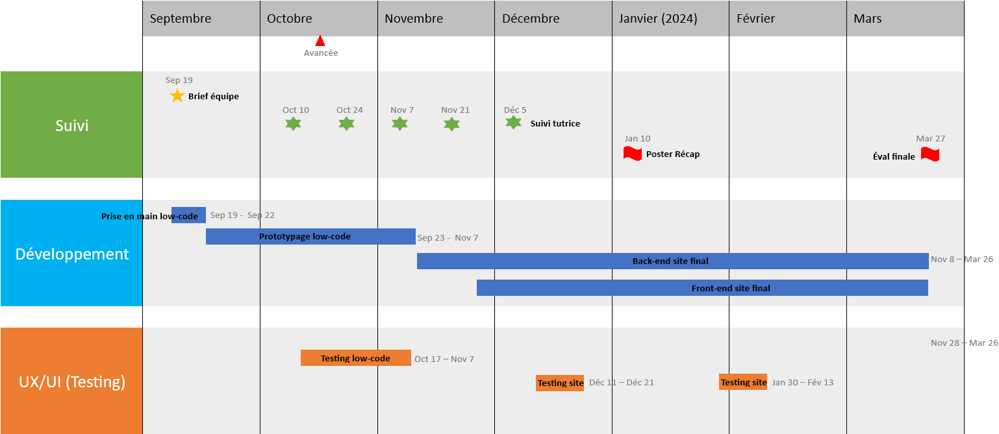
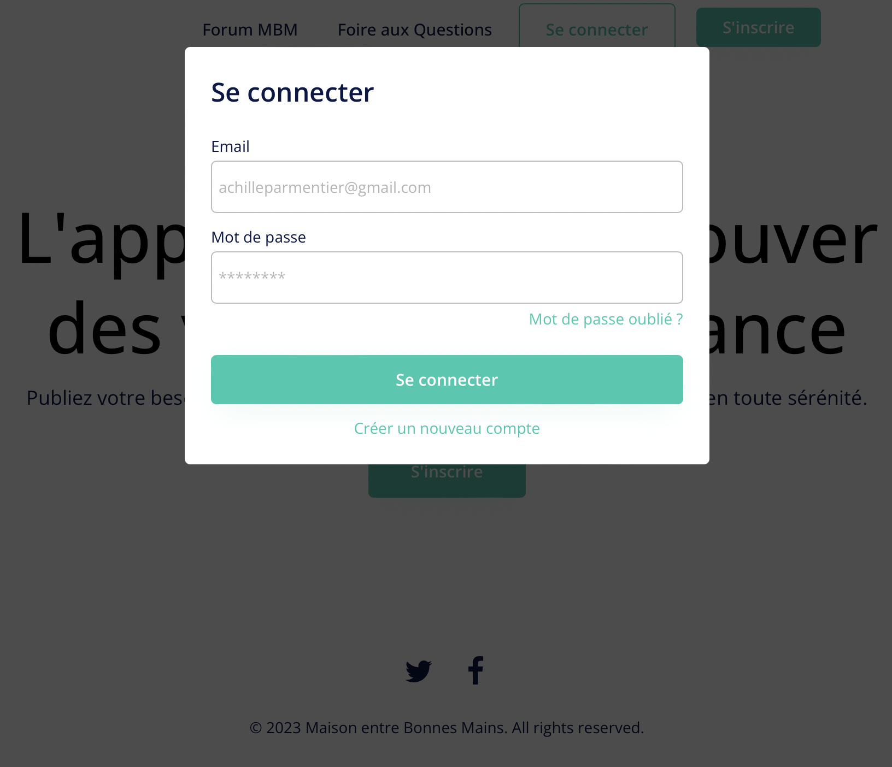
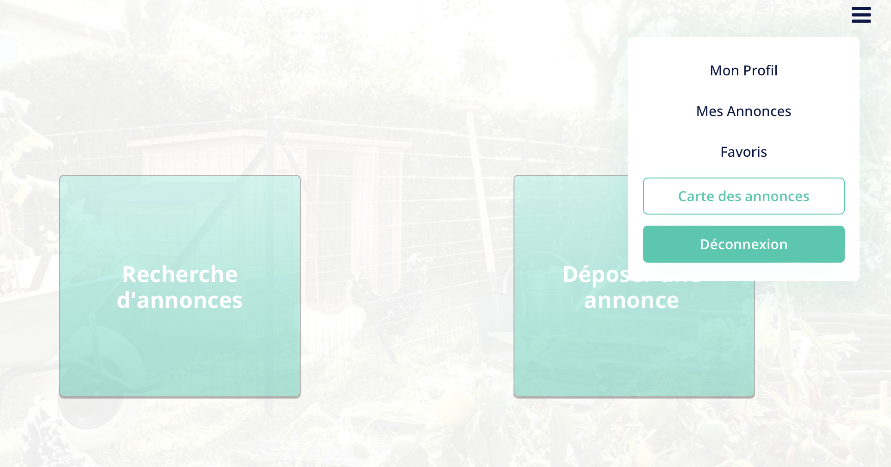

Centrale M'Aide
- PROJET
- 2023-2024
- Beguier Benoit
- Beyaert Alexandre
- Lalanne William
- Ouzoulias Nicolas
Création d'un site de mise en relation des élèves centraliens pour déposer et répondre à des annonces.
Dernière mise à jour : 28/11/2023
Introduction et contexte
L'année dernière, alors qu'il s'apprêtait à partir en vacances, William n'a trouvé personne qui pourrait s'occuper de son jardin en son absence (pas chez ses voisins, pas même chez ses amis).
Résultat : tout son potager est mort en son absence.
Nous souhaitons créer une plateforme de mise en relation de particuliers pour la garde d'animaux et la gestion de jardins pendant une absence.
Recentrage
Après réflexion et discussion avec Adèle, notre tutrice, nous avons décidé de recentrer le projet. Nous allons nous concentrer sur un public centralien uniquement, ce qui nous permet de développer un projet plus précis et répondant à une demande que nous connaissons tous. Nous nous basons ainsi sur un public clairement identifié et les personae seront correctement définis.
Présentation
Une plateforme type Leboncoin permettant à un particulier de déposer son annonce (besoin ponctuel, besoin récurrent, type tous les jeudis ; ou alors seulement pendant une semaine d'absence) avec une description et des infos pratiques. Les autres utilisateurs peuvent rechercher les annonces proches de chez eux, et avoir accès à la carte des Colocs. Après acceptation d'une annonce, l'utilisateur est invité à contacter l'accepteur sur Messenger.
Et ça existe déjà ?
Alors oui, mais non. Les applications existantes (Allovoisins, Yoojo, etc...) ne proposent que de la mise en relation entre particuliers et artisans ou dépanneurs, etc... Nous souhaitons proposer un site Internet de confiance dédié aux centraliens, et qui favorise l'échange et les interactions sociales. La vie des centraliens s'en verra grandement améliorée.
Rendu final, principaux jalons et compétences sollicitées
Rendu final
- Site Low-Code / No-Code
- Airtable : outil permettant de gérer les bases de données, dans notre cas pour gérer les annonces, les utilisateurs, et les favoris.
- Bubble : outil de no-code permettant de créer une maquette fonctionnelle de notre site Web.
Le site Low-Code / No-Code est fonctionnel et esthétique. Il permet de naviguer sur les différentes pages(dépôt d'annonce, sélection d'annonce, chatbot, ajout de favoris, création du profil utilisateur...)
Le but étant d'exploiter au maximum les possibilités fournies par l'usage du Low-Code / No-Code de sorte à proposer en peu de temps un prototype avancé du futur site web.
- Site "dur"
- Partie front-end, fonctionnelle pour déposer une annonce, visualiser des annonces, échanger entre utilisateurs
- Partie back-end pour gérer les fichiers et données utilisateurs
Le site "dur" sera une version partielle du site Low-Code / No-Code : seules les principales fonctionnalités seront présentes.
L'objectif étant cette fois-ci de développement des compétences de DevWeb.
Principaux jalons
- Expérience utilisateur (UX/UI) : due date 26/11/2023
- 1ère maquette en low-code : due date 7/11/2023
- Passage au devweb (front-end) pour créer "le design / les fonctionnalités" du site : due date 26/03/2024
- Ajout de back-end pour stocker les fichiers, gérer les données utilisateurs...
Compétences sollicitées
Site Low-Code / No-code
- Prise en main de fonctionnalités Low-Code / No-Code grâce aux outils Airtable et Bubble afin de créer un prototype fidèle à la version finale souhaitée
- Travail de créativité sur le design du site web.
- Découverte des différentes fonctionnalités/interfaces visibles sur un site internet.
Site "dur"
- Développement de compétences en DevWeb
- Apprentissage HTML, CSS, JS (front-end)
- Utilisation de l'application Bootstrap pour implémenter des fonctionnalités sophistiquées (front-end)
- Utilisation des outils de dévloppement pour comparer les scripts d'autres sites et s'en inspirer pour développer notre site
- Utilisation de Python au service des bases de données (back-end)
Gestion de projet
- Division et répartition des tâches dans la création d'un site
- Utilisation de l'outil Notion afin de suivre l'avancée du projet
TimeLine Projet
La TimeLine est vouée à évoluer et sera actualisée au cours du projet.

Fonctionnalités
Connexion et inscription
Lorsque le nouvel utilisateur arrive sur notre site Internet, il doit comprendre rapidement son fonctionnement. L'étude Experience 2030 (menée par Futurum Research et SAS) montre qu'un internaute décide en quelques secondes de quitter un site Internet si celui-ci n'est pas ergonomique. Nous avons décidé de bâtir une interface utilisateur claire avec un nombre limité de boutons. Les boutons classiques Se connecter et S'inscrire sont les seuls mis en valeurs sur la page d'accueil.

Ces deux boutons renvoient vers une page d'identification fonctionnelle, qui gère les questions d'authentification et qui met à jour la base de données des identifiants/mots de passe. A titre d'exemple pour la maquette en low code, nous requérons qu'une adresse mail et un mot de passe. Il est possible que ces exigences évoluent dans le futur.


Menu déroulant
Nous avons implémenté un menu déroulant sur la droite de l'écran qui permet à l'utilisateur, sur n'importe quelle page, d'avoir accès aux pages suivantes jugées importantes dans notre parcours utilisateur :
- Mon Profil
- Mes Annonces
- Mes favoris
- Carte des annonces
- Déconnexion

Voici l'utilité de chacune de ces pages :
| Mon Profil | Mes Annonces | Favoris | Carte des Annonces | |
|---|---|---|---|---|
| Résumé | Personnalisation et actualisation du profil | Liste des annonces déposées | Liste des annonces ajoutées aux favoris. | Carte interactive répertoriant les annonces et leur localisation |
| Informations que l'on y trouve | Nom, Prénom, Age non modifiables. | Visibilité des annonces, utilisateurs intéressés. Possibilité de modifier les annonces. | Si le déposant modifie l'annonce que la bonne main a ajouté aux favoris, ce dernier sera alerté | Annonces affiliées à une zone géographique et non une adresse précise pour préserver la sécurité des annonceurs |
Déconnexion
Quand un utilisateur se déconnecte, il est alors redirigé vers la page d'accueil, qui lui permet de se reconnecter si besoin.
Dépôt d'une annonce
L'annonceur remplit un formulaire simple mais précis, avec plusieurs fonctionnalités destinées à lui faciliter la vie :
- la sélection d'une date se fait avec un calendrier interactif
- le dépôt d'un fichier photo permettant de rajouter des informations qu'il ne pourrait pas décrire facilement, telle que l'étendue du potager...
Cette page est destinée à être simple, afin que le dépôt d'une annonce ne soit pas synonyme de prise de tête pour l'utilisateur.
Une fois le bouton Déposer mon annonce cliqué, une page de confirmation s'affichera pour éviter de publier des annonces avec des erreurs.

Recherche des annonces
La page de recherche affiche peu d'informations pour chaque annonce. Nous pensons que la sélection d'une annonce se fait d'abord sur les critères de dates et de lieu, c'est pourquoi ils sont visibles directement. Cela permet une recherche fluide et épurée. Dès qu'un utilisateur est intéressé par une annonce, il peut la consulter pour avoir plus de détails et la mettre dans ses favoris. Il peut ensuite confirmer qu'il est disponible pour débuter la conversation avec l'annonceur.

Fonctionnalités à développer
- Le système de chat entre particuliers une fois que l'annonce a été acceptée.
- La carte des annonces qui permet à l'utilisateur d'afficher une carte de ses environs avec les annonces à disposition.
- Le système de notation des autres utilisateurs et des services rendus. Afin de garantir une transparence et de garder des bonnes mains bienveillantes, ce système permet d'alerter les autres utilisateurs et de les mettre en garde avec une mauvaise note si une bonne main ou un annonceur n'ont pas respecté leurs engagements.
- La page de confirmation lors du dépôt d'une annonce
- La barre de recherche fonctionnelle
- Le système de favoris qui communique avec la base de données
- Un espace de retour de la part des utilisateurs pour les développeurs
Sécurité de l'utilisateur
Une problématique centrale réside dans la confidentialité des données, et de la sécurité des annonceurs (biens dégradés, cambriolages, etc...). De la même manière qu'Airbnb, seule la personne ayant accepté une annonce peut consulter l'adresse exacte de l'annonceur, sinon elle est localisée par une zone relativement large.
Le centrage du projet sur les élèves centraliens permet de limiter les effets listés ci-dessus, car il existe une relation de confiance non-négligeable entre les centraliens.
Business Plan
Etant donné le public centralien, le site internet ne sera pas à but lucratif (même si y aura la possibilité pour les associations de faire de la pub moyennant finance). Les serveurs seront ceux de l'école, ainsi tout l'argent ira directement dans nos poches après un partage inéquitable.
Front end
A l'heure actuelle (28/11/2023), nous avons créé en local l'ensemble des pages du site en HTML. Nous avons décidé de créer un fichier .css pour le header, qui sera identique pour l'ensemble des pages du site. Cela permet de centraliser l'information, et si nous souhaitons modifier l'apparence du header, cela peut être fait directement dans ce fichier et s'actualiser sur toutes les pages.
Nous avons aussi défini des classes et des styles pour les fonctionnalités suivantes :
- les boutons de connexion et de déconnexion
- le menu déroulant
- les grid qui recueillent l'ensemble des annonces
- les titres, les sous-titres, le corps de texte